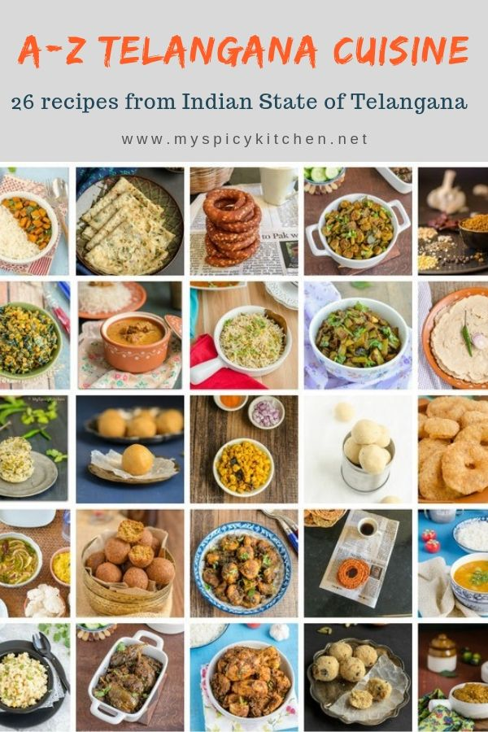
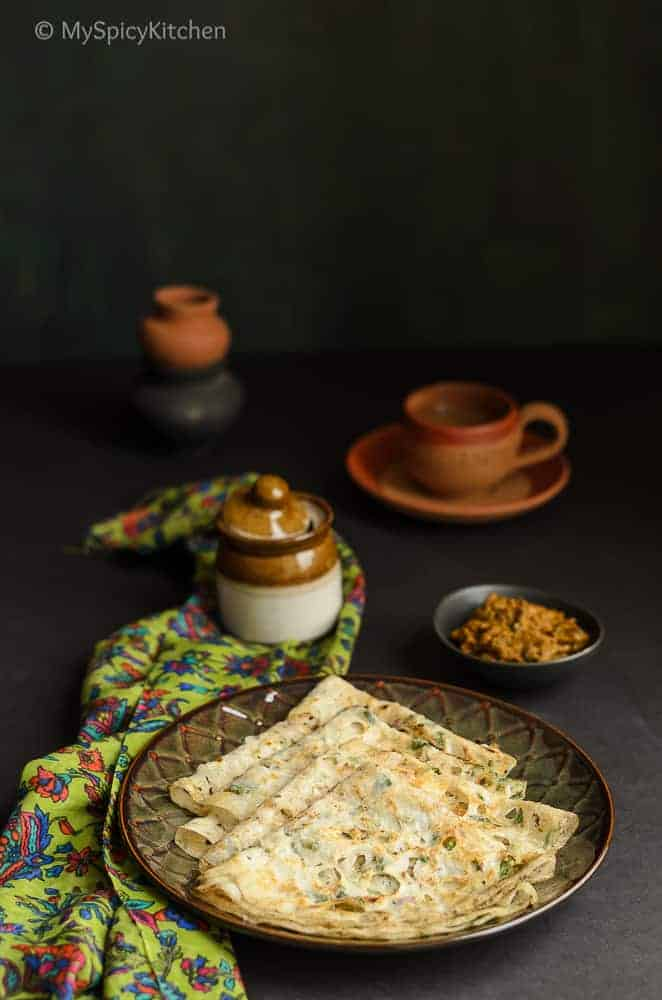
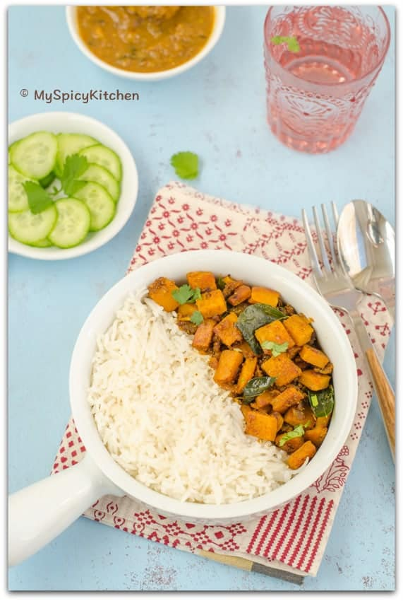
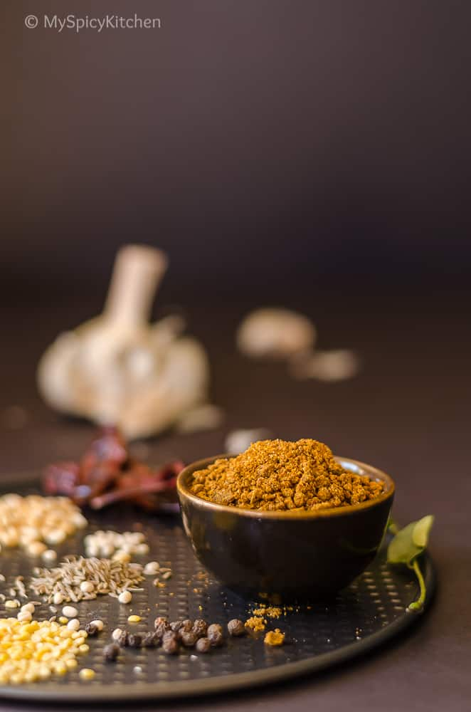
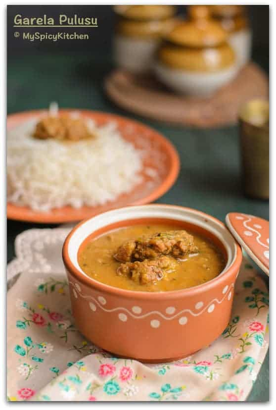
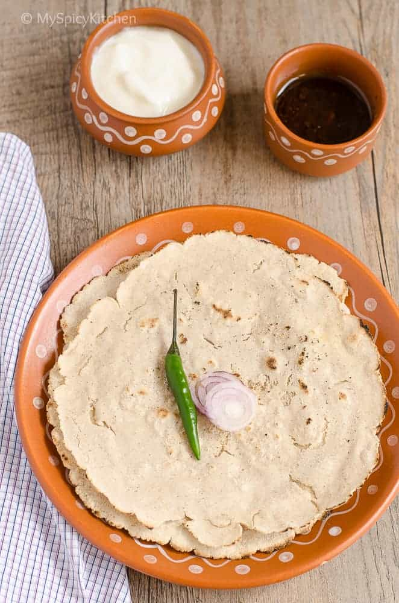
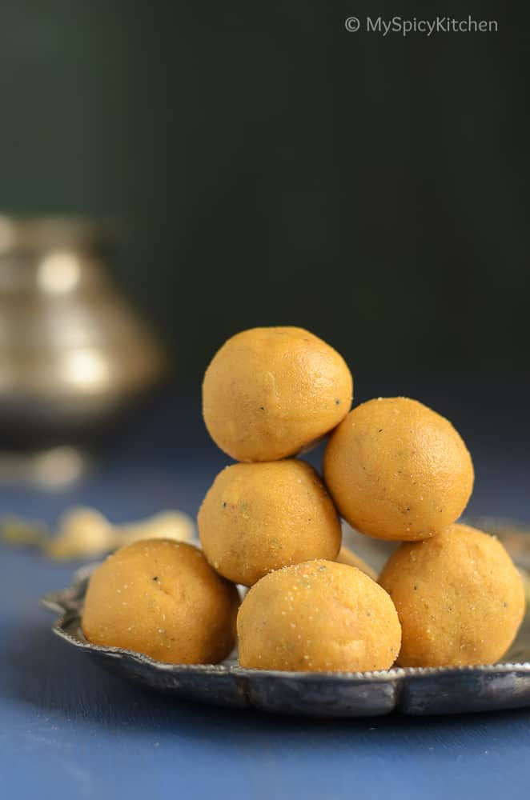
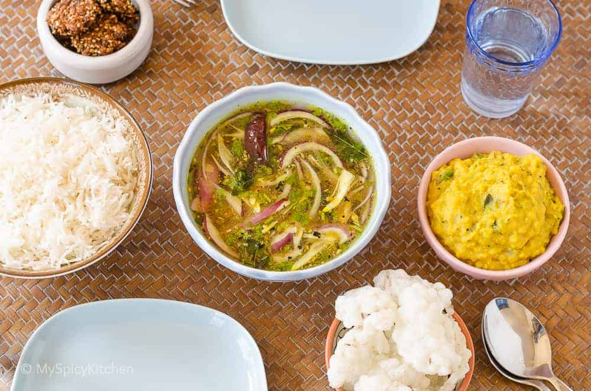

Food Cuisine

Main Recipes Of Telangana:-
=> Hyderabadi Dum Briyani
=>Biyyapattlu

=>Attu Tunukala Koora

=>Ellipaya Karam

=>Garela Pulusu

=>Jonna Rotte

=>Laddu

=>Pappu & Pachi Pulusu

NEXT